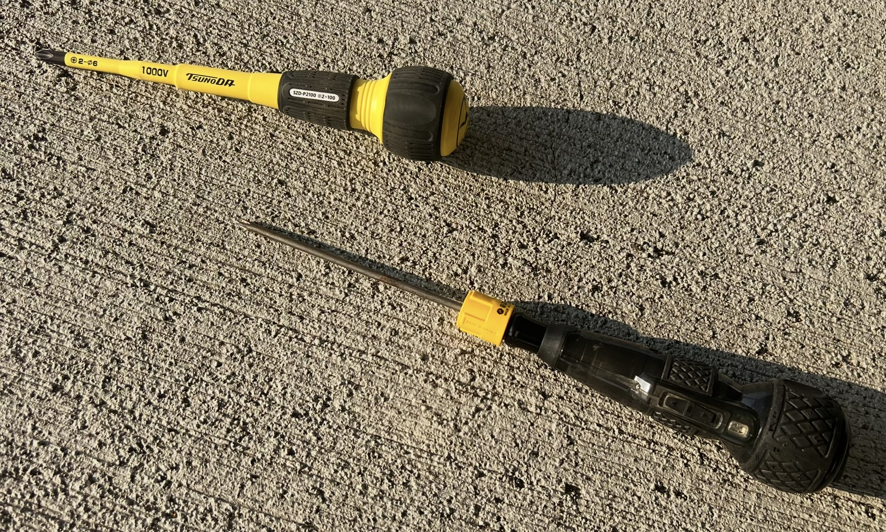
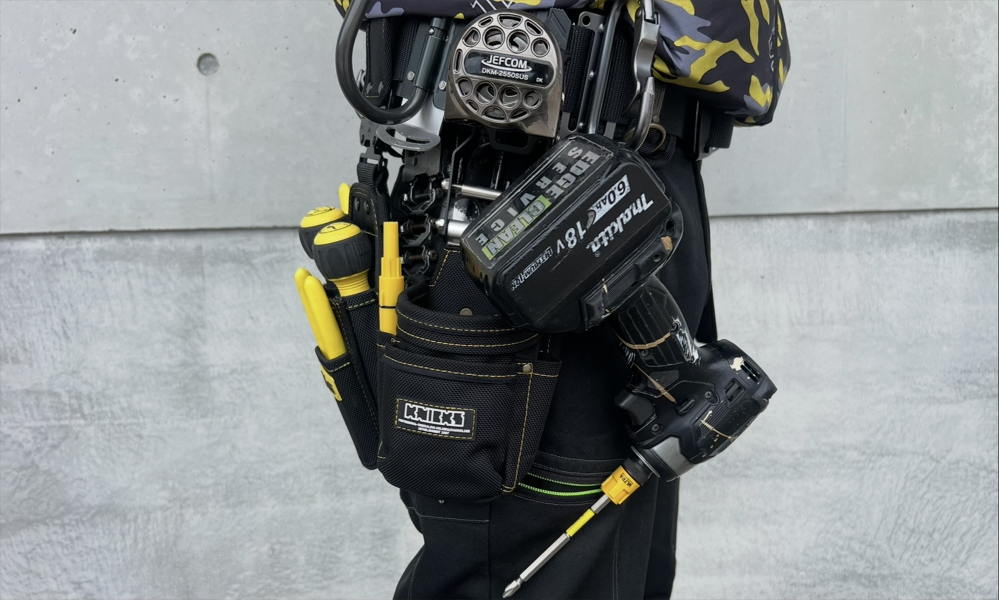
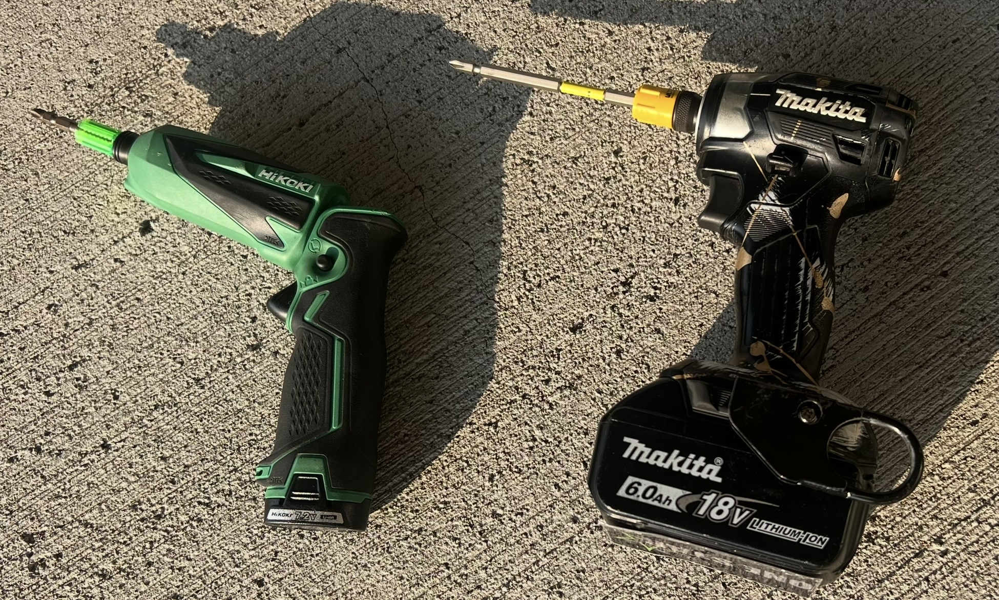
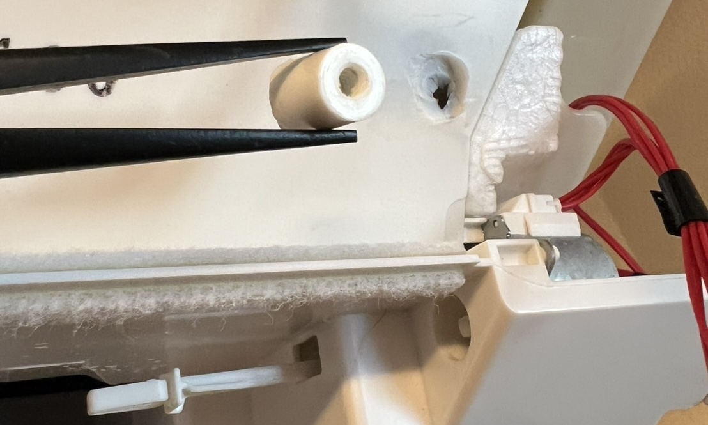
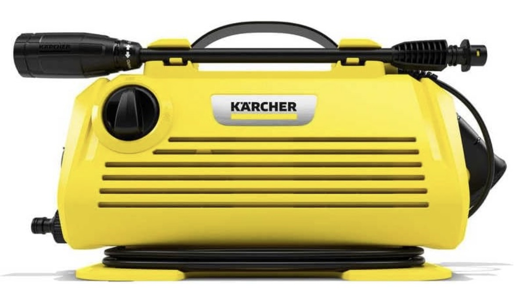
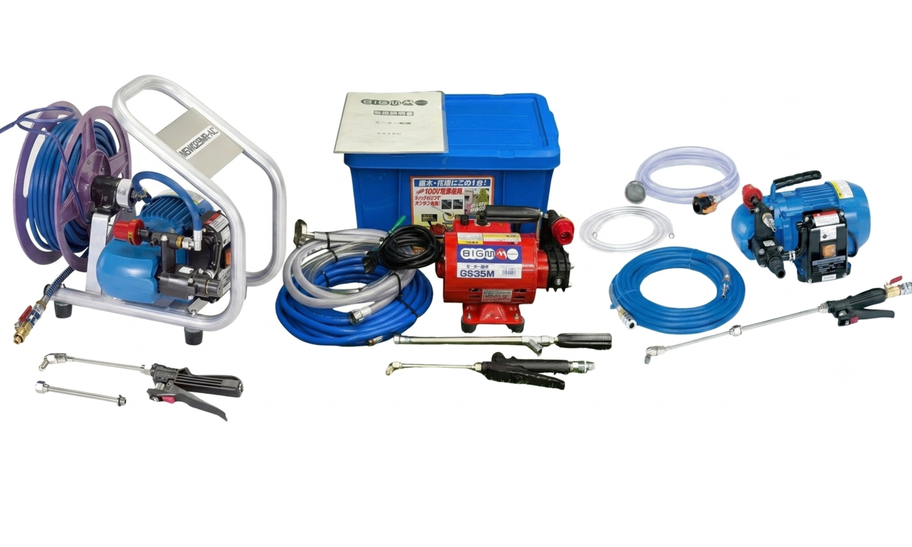
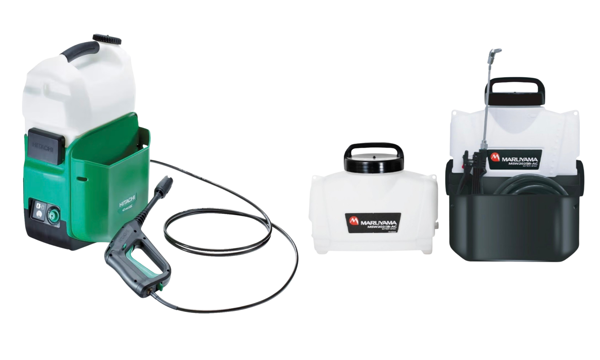
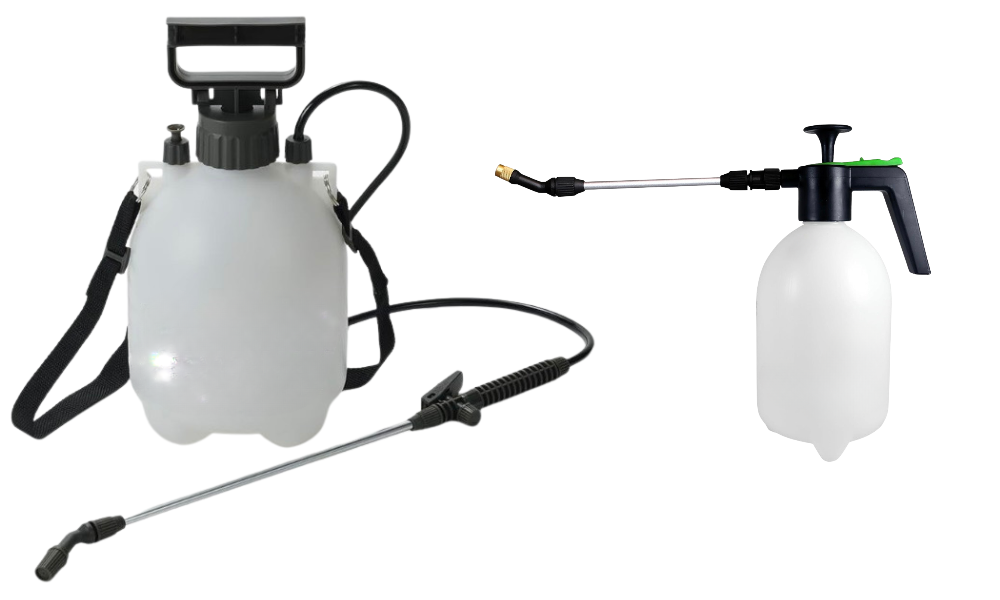
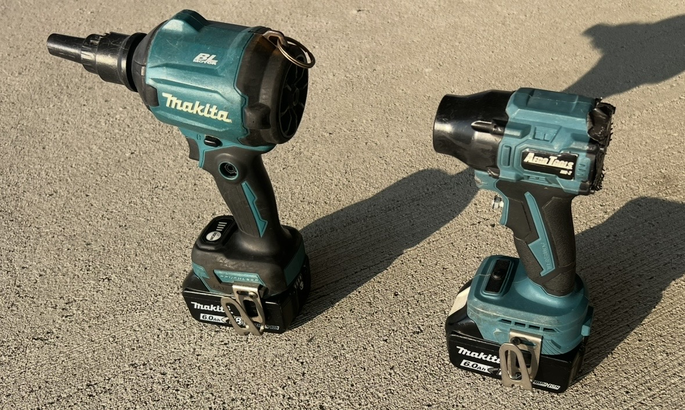
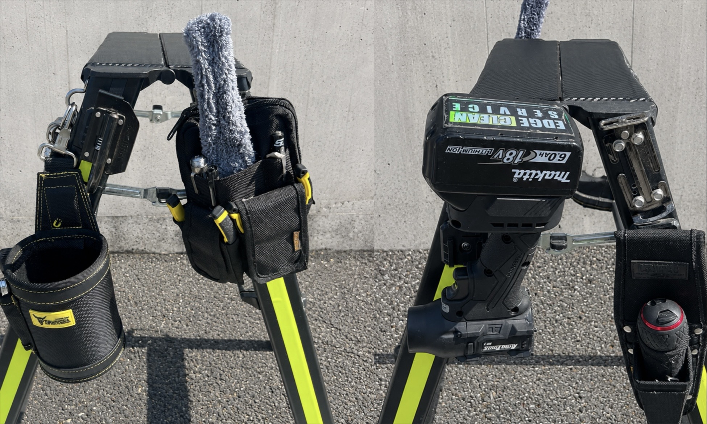

STAR
STAR
プロフェッショナルとしての
【使用工具への拘り】
質の高いクリーニングは、
腕だけでなく「厳選した工具」
があってこそ実現します。
当店が厳選し、
現場で実際に使用している
こだわりの工具をご紹介します。
【家庭用】樹脂パーツを守る
「手動＆USBドライバー」
ご家庭のエアコンのパーツは
「樹脂（プラスチック）」で
出来ています。
そこに強力な力でネジを締め付けると、
ネジ穴が広がり、
空回りしてネジの意味を果たさなくなって
しまいます。
当店ではエアコンへの負担を最小限に
抑えるため、
時間はかかっても
「手回しの手動工具＋
USB充電式ドライバー」
を使用し、
優しく丁寧に組み付けを行っています。
遅れた時間は、
私のテキパキとした動きで
いくらでも挽回できます！

私が愛用しているドライバーです。
【業務用】確実かつ安全な
「18Vインパクト」
業務用エアコンにはプロ仕様の
【18Vインパクトドライバー】
最新のトルク調整機能で
初めから弱く設定できるため、
ペン型よりも優しく、
かつ圧倒的なパワーで
安全かつ確実な分解・組み付けを行っています。

私が愛用している18Vインパクトドライバーです。
「ペン型インパクト」は
出番なしの結論
固く締まった業務用エアコンの分解では、
ペン型ではトルク不足で
「ガガガッ！」と鳴るだけで
ネジが回らないことがあります。
無理に回そうとすると、
ネジの頭が潰れてしまい、
取り外しが困難になるケースもあります。
家庭用エアコンにおいては
締め付けトルクが強すぎて
樹脂パーツを破損させやすくなります。
実際にネジが効かなくなったエアコンを、
何度も目にしてきました。
私が対応した時には、
｢爪楊枝の様な物をネジ穴に侵入｣
｢メーカー純正より少し太めな汎用ネジ｣
これらで応急処置は可能です。
しかし、
破損させないよう配慮する。
これが最善だと私は考えます。
私は自腹で全ての工具を購入し
検証しました。
その結果、
「エアコンクリーニングにおいて
ペン型インパクトの出番は一切ない」
という結論に達しました。
どんな工具を選ぶかで、
その職人の仕事に対する姿勢が表れます。

左はペン型(不用品) 右は愛用のインパクト！
SHOPオリジナルのリペイントがお気に入りです。
※ペン型でも、インパクトの無い
スクリュードライバーなら
破損を減らせるでしょう。

インパクトドライバーによって破損した部品です。
お掃除ロボット取り付け部なのですが、
この裏は水の受け皿(ドレンパン)です。
貫通して、ここから水漏れしていました…
近年は
「どこまで分解するか」
が注目されがちです。
しかし私は、
それ以上に大切にしたい事があります。
分解手法だけでは測れない、
長く安全にお使いいただくための配慮。
それこそが、私の考えるプロの仕事です。
【静音×高水圧】
ケルヒャー × 電圧降下トランス
私は5年以上前から
最大8MPaを誇る『ケルヒャー』一択です。
そのままでは威力が強すぎるため、
スピードコントローラー
（電圧降下トランス）を介して
電圧を下げ、
水圧を自在にコントロールしています。

当店愛用のK2 Little
最大許容圧力／8MPa
吐出水量／5.5L／min
とても静かです。
エアコン洗浄用として
売られている洗浄機の場合
一般的なエアコン洗浄機は
あまり水圧が高くありません。
軽度な汚れに対しては
全く問題ありませんが、
状況によっては力不足と言えるでしょう。
もちろん洗浄できないわけではありませんが、
分厚い熱交換器やガンコな汚れを貫くためには、
この水圧では不十分だと私は考えています。

これらは高圧洗浄機ではなく動力噴霧器です。
最大許容圧力／3.5MPa
吐出水量／3.3L／min
常にガラガラと音が煩い…
私も以前は
動力噴霧器を愛用していました。
しかしケルヒャーと比較すると
重量・騒音・圧力・価格・売場
全てにおいて
ケルヒャーが圧勝です。

これらは充電式の噴霧器
1.5MPa〜2MPaほど。
電源が無い現場だと
充電式は重宝しますね。
しかし圧力は弱く
電源がある場面では
出番はありません。
万が一の時のため
予備として持っておくには
良い道具だと思います。

これらは蓄圧式噴霧器
どう考えても圧力不足です。
農薬散布用ですね。
洗剤を塗布できるのは表面だけです。
エアコンクリーニングに使う物ではないと
思っていますが、
使ってる清掃業者は珍しくないように思います。
私達株式会社ECSのスタッフは
『洗剤から機械を通して
高圧力で洗浄する』
ことを徹底しています。
洗剤の消費量も経費も跳ね上がりますが、
嘘や手抜きはしたくありません！
高圧でたっぷりの洗剤を奥まで浸透させ、
ケルヒャーの高水圧で一気に洗い流す。
これが私の譲れない拘りです。
【圧倒的風速】異次元の
ジェットブロワー MK-2
洗浄後の水滴を吹き飛ばす送風機。
以前は大手メーカーの
最新エアダスターを愛用し
「これ以上はない」と思っていましたが、
現在はそれを遥かに凌駕する
エアロツールズの「MK-2」を使用しています。
風速270km/h、超高速76650rpm。
大容量バッテリーがわずか7分で
空になるほどの規格外のハイパワーで、
作業効率が爆発的に向上。
一度使えば、
もう過去の道具には戻れません。

私が愛用しているジェットブロワーです。
家庭用エアコン洗浄では
腰道具は使用しません！
私は家庭用エアコンクリーニングにおいて、
腰道具は絶対に使用しません。
コレには明確な理由があります。
腰道具はとても便利です。
沢山の工具を身につけることで
作業効率は上がります。
私も業務用エアコンには
ガッツリと腰道具を着用します。
しかし一般家庭での作業の場合
狭い廊下や階段
エアコン取り付け位置が
左右の壁際だったりします。
そんな状況下で
腰道具を着用していると、
クロス、壁紙に
キズをつけてしまうリスクが増します。
もちろん
【慣れ】や【配慮】で
このリスクは軽減できます。
しかし絶対ではありません。
どれだけ慣れていても
万が一、運悪く
キズつけてしまうかもしれません。
配慮して動きにくい体制での
無理な作業では
余計に時間がかかる事も。
そのため私は
必要最低限の手工具を
脚立に集約させています。
これにより
腰道具を使う時と同様に
工具の持ち替えのために
何度も無駄に脚立を昇り降り
する必要は無くなります。
安全かつ手際よく作業に集中できます。

手工具は脚立にセットし、安全・安心を最優先しています。
エアコンに優しく
汚れには厳しく！
ケルヒャーの高水圧と
MK-2の爆風で
奥の奥まで徹底洗浄！
これが私の
譲れない拘りです！